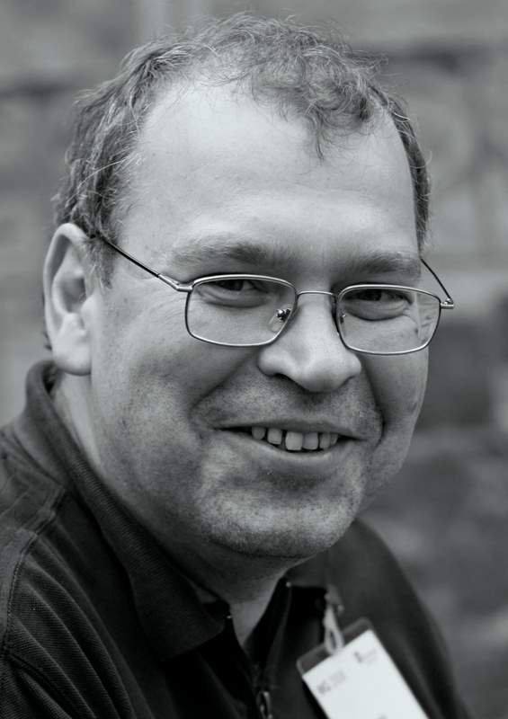

Since 2002, I am a professor in computer science at the University of Bergen, doing research in Algorithms and Combinatorics. My Master (1992) and PhD (1997) degrees are from the Faculty of Mathematics and Mechanics, St. Petersburg State University and my supervisor was Prof. Nikolay Petrov. Here is a link to my page at the Mathematics Genealogy Project.